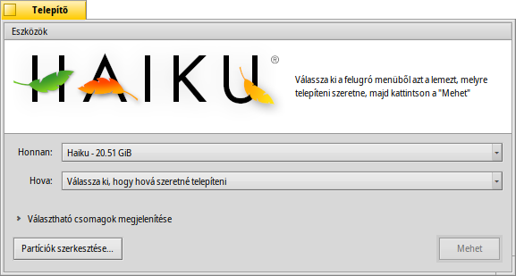

Magyar
Magyar Français
Français Deutsch
Deutsch Italiano
Italiano Русский
Русский Español
Español Svenska
Svenska 日本語
日本語 Українська
Українська 中文 ［中文］
中文 ［中文］ Português
Português Suomi
Suomi Slovenčina
Slovenčina Português (Brazil)
Português (Brazil) English
English Telepítő (Installer)
Telepítő (Installer)
| Asztalsáv: | ||
| Útvonal: | /boot/system/apps/Installer | |
| Beállítások: | Nincs |
A telepítő a Haiku egy megadott lemezre/partícióra másolására szolgál.
Indítás után fontos információk jelennek meg. Ez nem csak egy szerződés, ugyanis más fontos információt is tartalmaz:
Ez csak egy alfa-állapotú szoftver. Készíts biztonsági másolatot az adataidról!
A telepítő előkészített partíciót igényel. Használhatod a GParted LiveCD-t vagy hasonló programot amíg a Haiku Lemezkezelője nem érik meg eléggé a feladatra.
- A Haiku manuálisan hozzáadható a GRUBrendszertöltőhöz. Erről bővebben olvashatsz az interneten elérhető leírásban.
, után az alábbi ablak fogad minket:
Az első menüben meg kell adnunk a telepítés forrását. Jelenleg ez egy már telepített Haiku, vagy telepítő CD illetve USB lemez lehet.
A második menüben pedig a telepítés helyét kell kiválasztanunk. Ez a lemez/partíció felül lesz írva, és szükséges telepítés előtt előkészíteni például a GParted-el.
A Választható csomagok megjelenítése-n kattintva ha vannak, akkor további csomagokati s telepíthetünk a Haiku-val együtt.
Győzödjünk meg arról, hogy a megfelelő partíciót választottuk ki a telepítés helyének. Kattintson a gombra a Lemezkezelő megnyitásához a lemezek/partíciók ellenőrzéséhez és az információik megtekintéséhez.
A gomb megnyomásakor a telepítési folyamat elkezdődik, ami gyakorlatilag mindent átmásol (a home/ és a common/ mappákat is) a cél lemezre, majd indíthatóvá teszi azt.
 Eszközök
Eszközök
A telepítés végeztével a partíció automatikusan indítható lesz. Ugyanakkor megeshet, hogy más operációs rendszerek vagy partícionáló programok (véletlenül) felülírják a rendszertöltőt a Haiku lemezen. Ebben az esetben indítsuk el újra a telepítőt. Válasszuk ki a telepített Haiku-t a listából, majd pedig a menüpontot az menüből, hogy újra indíthatóvá tegyük azt.
A másik elem az menüben a , mely a rendszertöltőben egy menüt helyez el, minek segítségével választhatunk a telepített operációs rendszerek közül indításkor. További információk a Rendszerválasztó fejezetben.
Nem szükséges a Rendszerválasztó használata, ha már használunk másik rendszerválasztót, mint például a GRUB-ot, ahol manuálisan kell hozzáadnuk a listához a Haiku-t, illetve akkor sem szükségez, ha csak Haiku fut a gépen.